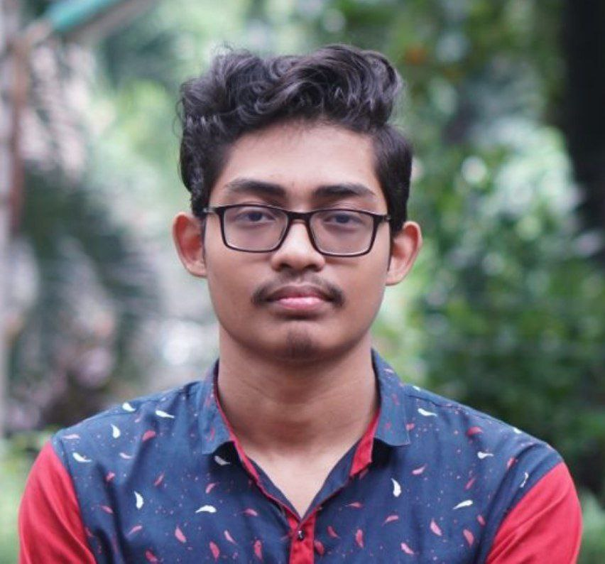

Dhaka, Bangladesh · BUET EEE
Mohammad Al Hosan Kanon
Semiconductor device physics & computational nanoelectronics
Recent graduate in Electrical and Electronic Engineering from Bangladesh University of Engineering and Technology (BUET), specializing in Electronics and Photonics. My undergraduate thesis uses first-principles DFT to study contact modulation in metal–2D TMD heterostructures. I also work in analog/RF circuit design and VLSI.

About
I completed my B.Sc. in Electrical and Electronic Engineering at BUET (Dec 2021–Jun 2026), majoring in Electronics and Photonics, with a final CGPA of 3.78/4.00 — including 4.00/4.00 in each of my final two terms.
My research centers on semiconductor device physics, computational nanoelectronics, 2D materials, and first-principles simulation using Density Functional Theory (DFT). My undergraduate thesis, supervised by Dr. Sharif Mohammad Mominuzzaman, investigates how strain and electric fields modulate contact behavior at metal–2D TMD heterostructure interfaces using Quantum ESPRESSO.
Alongside this, I have a secondary background in analog/RF circuit design, VLSI systems, and machine learning for signal analysis — developed through coursework, lab projects, and four IEEE conference publications across my undergraduate years.
Research Interests
Research Experience
Metal–2D TMD Semiconductor Heterostructure Contact Modulation Using Electric Field and Strain Effects via First-Principles DFT Calculations
Supervisor: Dr. Sharif Mohammad Mominuzzaman, Professor, Department of EEE, BUET
- Performed first-principles DFT simulations of metal–TMD heterostructures using Quantum ESPRESSO.
- Investigated strain- and electric-field-induced modulation of Schottky contact characteristics and electronic properties.
- Analyzed charge transfer, electrostatic potential profiles, and band alignment at metal–semiconductor interfaces.
Conference Publications
Design and Simulation of a Class-A Common-Emitter RF Power Amplifier for the 433 MHz ISM Band in Cadence Virtuoso
IoT-Based Real-Time Monitoring and Preservation System for Small-Scale Fruit Storage
Design and Implementation of a Dual-Mode Floor Mopping Robot
Bridging Spectral Specificity and Semantic Generalization for Respiratory Sound Classification: A Comparative Study of MFCCs and Augmented YAMNet Embeddings
Ongoing Research Activities
Dual-Flow RTL-to-GDSII Implementation of a Parameterized MAC Unit
A comparative study of commercial and open-source EDA toolchains for a parameterized multiply-accumulate unit, from RTL through GDSII.
A Portable Measurement Architecture for Multi-Modal LED Analysis
Scalable data normalization framework for multi-modal LED characterization measurements.
Undergraduate Projects
Class-A Common-Emitter RF Power Amplifier, 433 MHz ISM Band
Designed in Cadence Virtuoso (90nm gpdk090): 10.11 dB gain, 18.01 dBm Psat, 7.52% PAE, with S₁₁ ≈ −33.5 dB matching.
Cadence Virtuoso · RF Design · QUCS StudioView on GitHub →
IoT-Based Real-Time Fruit Storage Monitoring System
Arduino Mega + ESP8266, DHT22/MQ135 sensing, relay-controlled Peltier cooling and misting, with Arduino IoT Cloud logging and remote override.
Embedded Systems · IoT · Cloud IntegrationView on GitHub →
Fast-Decoupled Load Flow (FDLF) Study
Implemented FDLF in MATLAB across IEEE 4–30 bus test systems; faster convergence than Newton–Raphson at comparable accuracy.
MATLAB · Power SystemsUART Design in Verilog for FPGA Implementation
Moore FSM-based Tx/Rx modules with parity checking; verified via testbench simulation and demonstrated on CPLD/FPGA hardware.
Verilog · FPGA